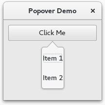

17. Popovers¶
O Gtk.Popover é uma janela separada usada para exibir informações adicionais e é frequentemente usada como parte de menus de botão e menus de contexto. Seus usos são semelhantes aos das janelas de diálogo, com a vantagem de ser menos prejudicial e ter uma conexão com o widget para o qual o popover está apontando. Os popovers estão visualmente conectados a um widget relacionado com um pequeno triângulo.
O ApPopover pode ser criado com Gtk.Popover; para abrir o popover use Gtk.Widget.show_all().
17.1. Popover Personalizado¶
Um widget pode ser adicionado a um popover usando o Gtk.Container.add().
17.1.1. Exemplo¶
1 2 3 4 5 6 7 8 9 10 11 12 13 14 15 16 17 18 19 20 21 22 23 24 25 26 27 28 29 30 31 32 33 34 35 36 37 | import gi
gi.require_version('Gtk', '3.0')
from gi.repository import Gtk
class PopoverWindow(Gtk.Window):
def __init__(self):
Gtk.Window.__init__(self, title="Popover Demo")
self.set_border_width(10)
outerbox = Gtk.Box(spacing=6, orientation=Gtk.Orientation.VERTICAL)
self.add(outerbox)
button = Gtk.Button.new_with_label("Click Me")
button.connect("clicked", self.on_click_me_clicked)
outerbox.pack_start(button, False, True, 0)
self.popover = Gtk.Popover()
vbox = Gtk.Box(orientation=Gtk.Orientation.VERTICAL)
vbox.pack_start(Gtk.ModelButton("Item 1"), False, True, 10)
vbox.pack_start(Gtk.Label("Item 2"), False, True, 10)
self.popover.add(vbox)
self.popover.set_position(Gtk.PositionType.BOTTOM)
def on_click_me_clicked(self, button):
self.popover.set_relative_to(button)
self.popover.show_all()
self.popover.popup()
def on_open_clicked(self, button):
print("\"Open\" button was clicked")
win = PopoverWindow()
win.connect("destroy", Gtk.main_quit)
win.show_all()
Gtk.main()
|